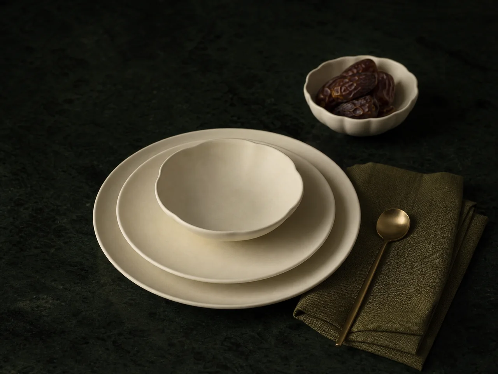

Nadwa Objects / Arabic tableware
SET THE OCCASION.
A premium tableware site should begin with the occasion, then make hosting, gifting and quantities clear enough to act on.
Explore tableware setsOne visual journey supports a personal place setting, a hosted dinner and a larger gift order without turning the page into a catalogue.


Brand feature
HOSTING BECOMES A SIMPLE DECISION.
Instead of asking customers to compare individual plates first, the experience starts with the occasion and brings together place settings, serveware, delivery and service details around it.

Set finder
A SET FOR EVERY OCCASION.
Selecting an occasion changes the place settings, serveware and next step without leaving the visual experience.
Hosting collection / AED 2,380Eight place settings, shared serveware and a clear delivery plan in a single purchase flow.

Choose the occasion: everyday, hosting or gifting.
Commerce route
FROM ONE OCCASION TO A LASTING COLLECTION.
Each step makes the next decision clear: choose the occasion, compose the pieces, arrange delivery, then return when the collection needs to grow.